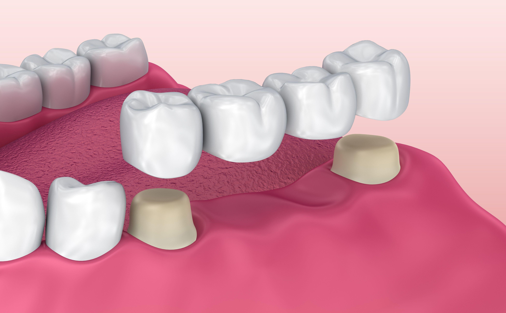
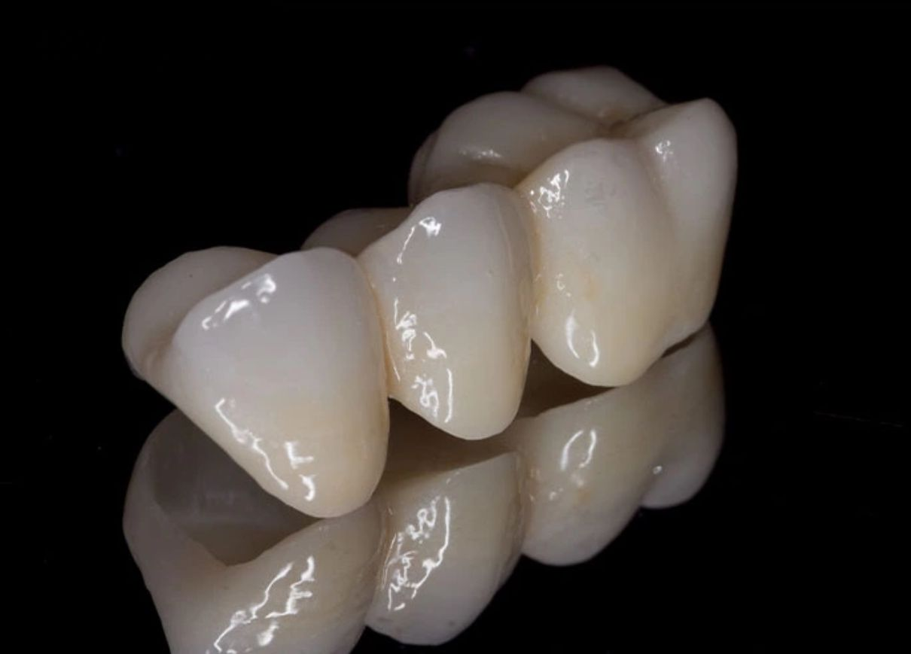
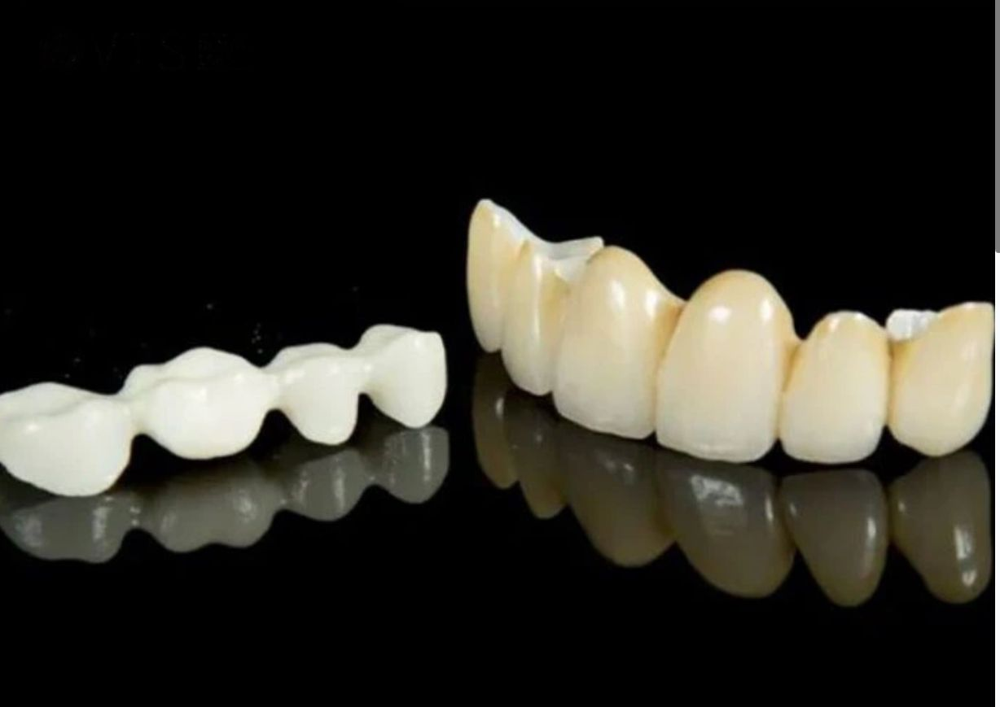
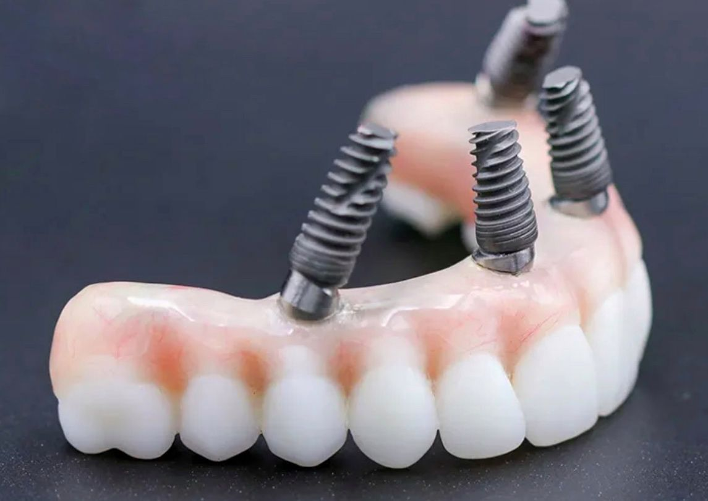
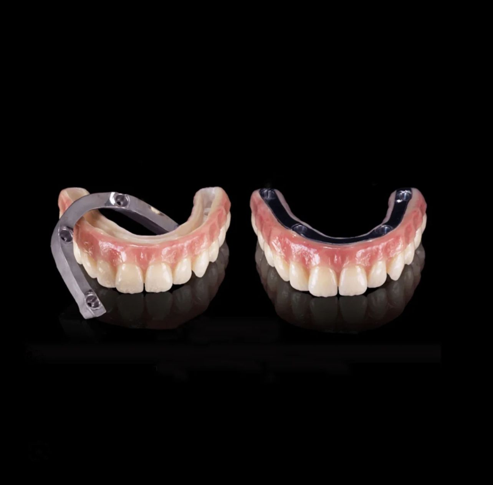

Dental prosthetics are devices used to restore missing or damaged teeth. They improve both function and aesthetics. Patients choose prosthetics to regain chewing ability, restore confidence, and improve speech.





The lifespan of crowns and bridges varies with the materials, fit, oral health, and ongoing care. A dental professional can discuss expectations for an individual case.
Yes. Zirconia is stronger, more aesthetic, and more biocompatible, often preferred for long-term restorations.
Yes. Our prosthetics are custom-designed to fit comfortably and restore natural chewing function.
Absolutely. Crowns and bridges allow eating all types of food after adaptation. Removable dentures may take a few days to get used to.
Warranty terms vary by provider and treatment. Confirm the details with your clinic before publishing.
Let us restore your smile with the most advanced dental implant solutions.
Reserve NowLocation: 123 Example Street, Your City
Phone: +1 (555) 010-0100
Map preview placeholder
Feel free to email us or book an appointment now.